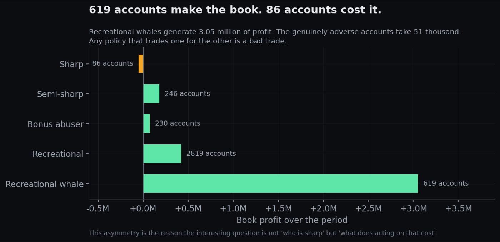
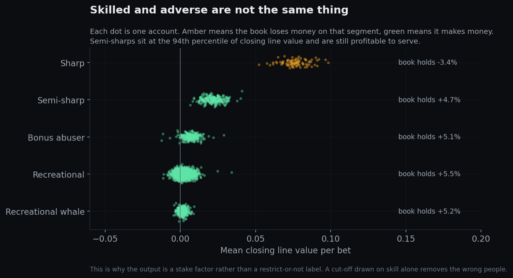
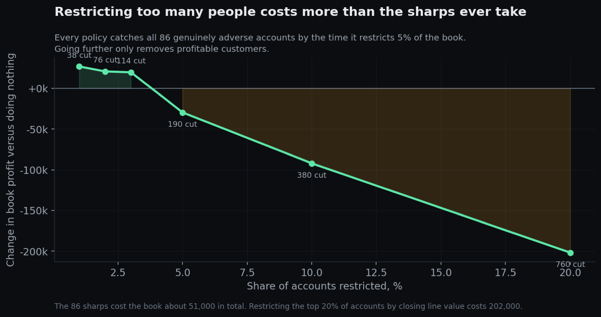

Stake Factor
Detecting adverse sportsbook accounts before the money is gone. This is the decision I was making by hand on a live desk, rebuilt into something you can actually measure and put a price on.
The question
How many settled bets does it take to tell a sharp bettor from a lucky recreational one, and what does it cost the book to act too early or too late?
At Fanatics I was turning that dial mostly by feel. I would pull up an account, look at its history and its metrics, and decide whether it needed restricting or whether its stake factor should go up. It was a judgment call made in a few minutes on partial information, and it was usually right, but I could never have told you how right. This project is the same call made with evidence behind it, and with an honest accounting of the errors on both sides.
It's worth saying what the headline question is not. It isn't whether I can cluster bettors. Clustering on data that I generated myself would be circular, because I would just be rediscovering my own assumptions and then calling the result a finding. The defensible question is about how fast an estimator converges against a truth you already know, and that is exactly the kind of question simulation is the right tool for.
Design commitments
Three decisions made up front, each of which rules something out:
- The axis is skill against economic value, rather than profitable against adverse. A high volume recreational parlay bettor is the most valuable account on the whole book, while a $50 sharp is adverse but cheap. If you collapse those two into a single dimension you throw away the thing the business actually cares about.
- The output is a continuous stake factor, not a binary label. Restrict or don't restrict was never really the decision I was making. It was a dial.
- Segment on process, not on outcome. The features are closing line value, bet timing, market selection and stake behavior, and never realized profit or win rate. Under a few thousand bets a season of profit and loss is mostly variance, so showing that explicitly is one of the findings rather than a footnote.
Hybrid data: real market, simulated bettors
There is no public dataset of individual bettor histories and there never will be, because it is the most commercially sensitive data a sportsbook holds. So the design splits the difference. The market is real, meaning seven years of actual opening and closing odds across seven European divisions including Pinnacle, which is the industry benchmark. The bettors are simulated from documented and parameterized archetypes betting into that real market.
That split is what makes the result mean anything. The bettors are my assumptions, and they are stated openly in a parameter file so anyone can argue with them. The prices they face, and whether those prices were beatable at all, are not up to me.
What I found so far
The market layer is built and queried, all of it written in SQL against DuckDB. Two hypotheses went in. One of them held up and the more interesting one did not.
Confirmed: books charge far more where nobody is watching
| League | Market depth | Overround |
|---|---|---|
| La Liga | Deep | 2.66% |
| Premier League | Deep | 2.68% |
| MLS | Medium | 2.97% |
| Championship | Medium | 3.07% |
| Eredivisie | Medium | 3.33% |
| League Two | Thin | 3.71% |
| Scottish League One | Thin | 5.71% |
Scottish League One carries more than double the margin of the Premier League. Books compete on price where the volume is, and where nobody is looking they take what they like.
Rejected: thin markets are not mispriced
The obvious follow on hypothesis was that thin leagues, being less scrutinized, would also be priced less accurately. To test it I compared each league's observed calibration error against the error you would expect from sampling noise alone. This step matters, because with only a few thousand matches you are guaranteed to see some apparent error even if the prices are perfect. A ratio near 1.0 means the league is indistinguishable from perfectly calibrated.
| League | Observed | Noise | Ratio |
|---|---|---|---|
| La Liga | 1.76pp | 1.40pp | 1.26 |
| Scottish League One | 2.44pp | 2.09pp | 1.17 |
| Championship | 0.99pp | 1.15pp | 0.86 |
| Premier League | 1.07pp | 1.32pp | 0.81 |
| Eredivisie | 1.19pp | 1.47pp | 0.81 |
| MLS | 0.69pp | 0.86pp | 0.80 |
| League Two | 0.81pp | 1.18pp | 0.68 |
Every ratio falls between 0.68 and 1.26. Not a single league shows mispricing that can be distinguished from noise. My hypothesis is rejected, and the result independently reproduces the received wisdom that Pinnacle's closing line is effectively unbeatable.
That result matters for the project instead of derailing it, because it means a simulated sharp can't get an edge just by picking an obscure league. Their edge has to come from timing, meaning beating the closing line, which is both the realistic mechanism and the one I watched operate first hand at Fanatics.
The bettors, and why they behave as they do
Every simulated account decides using the opening price and its own private estimate. None of them is ever shown a closing price. That constraint was written into the design document before any code existed, because letting a bettor see the close would make the closing line value validation circular and worthless.
The closing price is used for exactly two things, both after the fact: as the proxy for the true probability when generating a bettor's private read, and to score closing line value once a bet is already placed. Using it as truth is justified by the market layer result above, which found no league distinguishable from perfectly calibrated. If closing lines are calibrated, the devigged closing probability is the best available estimate of truth, and saying that out loud is better than inventing a hidden variable.
Five archetypes, separated by how good their private estimate is, how much they lean toward favourites, and whether they bet early or late. A sharp is not someone with a secret. A sharp is someone whose estimate is closer to the truth than the opening price is, betting early into prices that have not yet absorbed everyone else's information.

The answer to the headline question
Two signals are available. Realized profit is what most people reach for, and it scores the outcome. Closing line value scores the decision: whether the price taken beat the market's final word, regardless of whether the bet came in.
Closing line value reaches 0.98 separation after five settled bets and is essentially perfect by forty. Realized profit never exceeds 0.62, and after two hundred bets it is indistinguishable from a coin flip.
This is the whole reason the project segments on process rather than outcome. A bet either wins or loses, so profit is an extremely noisy read on a probability. Waiting for profit to tell you something means waiting for a signal that is not coming.
Because the archetypes are known by construction, I am not discovering that sharp bettors exist. I am measuring how fast an estimator converges on a truth I already know, which is the one question simulation is genuinely the right tool for.
Skill and adversity are not the same axis
The obvious policy is to restrict whoever looks skilled. Running it exposes why that is wrong.

I got this wrong first. My initial version labelled semi-sharps as adverse because they are skilled. The cost model then reported a negative cost for failing to restrict them, which was the model telling me the label was wrong rather than the arithmetic. Adverse is an economic property, not a skill property, and that is exactly what the skill-by-value framing was set up to catch.
What acting too early actually costs
Restriction is a dial, not a switch, so a policy here means scaling an account's future stakes down to a tenth once its closing line value crosses a threshold. Every policy is measured against two reference points: doing nothing at all, and an unreachable oracle that restricts only the accounts that truly are adverse.
Every policy catches all 86 adverse accounts by the time it restricts 5% of the book. Going further only removes profitable customers. The sharps cost about £51,000 in total. Restricting the top 20% by closing line value costs £202,000.
That asymmetry is the actual finding, and it is the opposite of the instinct the job trains into you. 619 recreational whales generate £3.05m of profit while 86 sharps take £51,000, so a policy that trades one for the other is a bad trade even when it is correctly identifying sharps.
Timing turns out not to be the binding constraint. Acting after twenty settled bets already captures 92% of what the oracle achieves. There is no informational reason to wait, and the thing that actually determines whether the policy makes or loses money is where the threshold sits.

What this does not establish
- The bettors are my assumptions. Every parameter is written down in
docs/assumptions.mdso anyone can argue with them, but a simulation cannot tell you how real customers behave. What it can tell you is how an estimator behaves against a known truth, which is the only claim made here. - The archetypes are cleanly separated by construction. Real accounts sit on a continuum and drift between behaviours. The detection curve is therefore an upper bound on how fast this would work in production, not a forecast.
- One market type. Everything runs on match result betting. Parlays, in play and Asian handicap all have different margin structures and would change the economics of every segment.
- The stake factor of 0.1 is a stand-in. A real desk chooses that number per account, and how much volume actually survives a restriction is an empirical question this simulation assumes rather than answers.
What I would do next
- Cluster on the process features without using the archetype labels, and check whether the recovered segments line up with the ones I built in. That is the honest test of whether unsupervised segmentation earns its place here.
- Let accounts drift between archetypes over time, since the real difficulty on a desk is an account that changes rather than one that was always sharp.
- Model restriction as a continuous stake factor learned from the data rather than a fixed multiplier applied at a threshold.